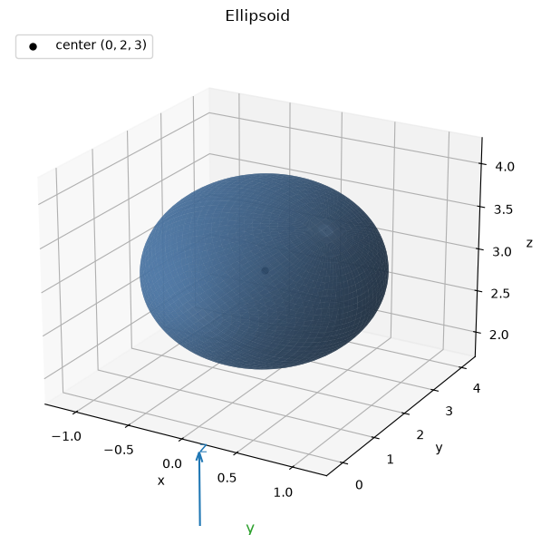
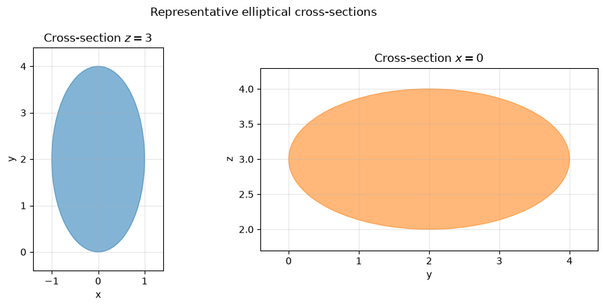
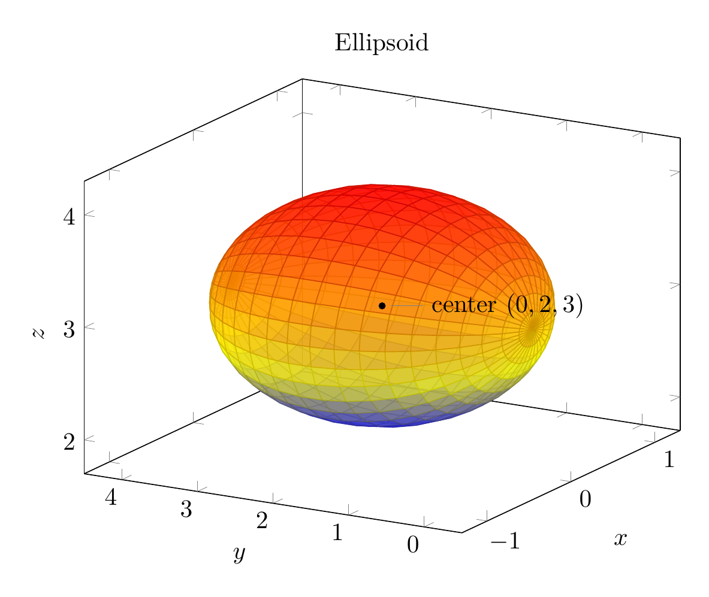
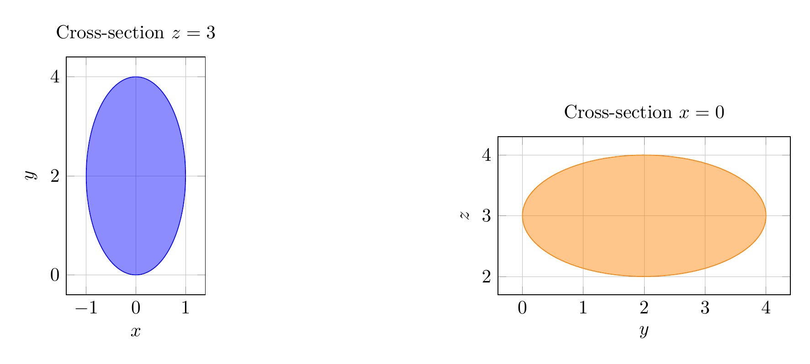

Path: mcma-Nex-N2-Pro/calculus-12.6.33/chat_20260825_021214_522902_utc_0800
Problem
Please solve the math problem in the image.

End of problem
Answer
Complete the square in the variables that appear linearly.
\[
4x^2+y^2+4z^2-4y-24z+36=0
\]
Group the \(y\)- and \(z\)-terms:
\[
4x^2+(y^2-4y)+4(z^2-6z)+36=0.
\]
Complete the square:
\[
y^2-4y=(y-2)^2-4,
\]
and
\[
z^2-6z=(z-3)^2-9.
\]
So
\[
4x^2+\bigl((y-2)^2-4\bigr)+4\bigl((z-3)^2-9\bigr)+36=0.
\]
Simplify:
\[
4x^2+(y-2)^2+4(z-3)^2-4=0,
\]
hence
\[
4x^2+(y-2)^2+4(z-3)^2=4.
\]
Divide by \(4\):
\[
\boxed{x^2+\frac{(y-2)^2}{4}+(z-3)^2=1}.
\]
This is the standard form of an ellipsoid:
\[
\frac{(x-0)^2}{1^2}+\frac{(y-2)^2}{2^2}+\frac{(z-3)^2}{1^2}=1.
\]
Therefore the surface is an ellipsoid centered at
\[
\boxed{(0,2,3)}
\]
with semiaxes
\[
\boxed{1,\ 2,\ 1}
\]
in the \(x\)-, \(y\)-, and \(z\)-directions, respectively. It is elongated along the \(y\)-axis.
The sketch is shown below, together with representative elliptical cross-sections.
---


\documentclass[border=10pt]{standalone}
\usepackage{pgfplots}
\pgfplotsset{compat=1.18}
\begin{document}
\begin{tikzpicture}
\begin{axis}[
width=10cm, height=8cm,
view={-60}{22},
xlabel={$x$}, ylabel={$y$}, zlabel={$z$},
xmin=-1.3, xmax=1.3, ymin=-0.5, ymax=4.5, zmin=1.7, zmax=4.3,
grid=none,
title={Ellipsoid}
]
\addplot3[
surf,
opacity=0.75,
domain=0:2*pi,
y domain=0:pi,
samples=35,
samples y=22
]
({cos(deg(x))*sin(deg(y))},
{2+2*cos(deg(y))},
{3+sin(deg(x))*sin(deg(y))});
\addplot3[only marks, mark=*, mark size=1.2pt, black] coordinates {(0,2,3)};
\node[pin=right:{center $(0,2,3)$}] at (axis cs:0,2,3) {};
\end{axis}
\end{tikzpicture}
\end{document}

\documentclass[border=10pt]{standalone}
\usepackage{pgfplots}
\pgfplotsset{compat=1.18}
\begin{document}
\begin{tikzpicture}
\begin{axis}[
width=7cm, height=6cm,
axis equal image,
xmin=-1.4, xmax=1.4, ymin=-0.4, ymax=4.4,
xlabel={$x$}, ylabel={$y$},
title={Cross-section $z=3$},
grid=both,
grid style={line width=.1pt, draw=gray!30},
major grid style={line width=.2pt, draw=gray!50},
enlarge x limits=false,
enlarge y limits=false
]
\addplot[domain=0:360, samples=120, fill=blue, fill opacity=0.45, draw=blue]
({cos(x)}, {2+2*sin(x)}) -- cycle;
\end{axis}
\begin{axis}[
width=7cm, height=6cm,
at={(8cm,0)},
axis equal image,
xmin=-0.4, xmax=4.4, ymin=1.7, ymax=4.3,
xlabel={$y$}, ylabel={$z$},
title={Cross-section $x=0$},
grid=both,
grid style={line width=.1pt, draw=gray!30},
major grid style={line width=.2pt, draw=gray!50},
enlarge x limits=false,
enlarge y limits=false
]
\addplot[domain=0:360, samples=120, fill=orange, fill opacity=0.45, draw=orange]
({2+2*cos(x)}, {3+sin(x)}) -- cycle;
\end{axis}
\end{tikzpicture}
\end{document}

End of answer